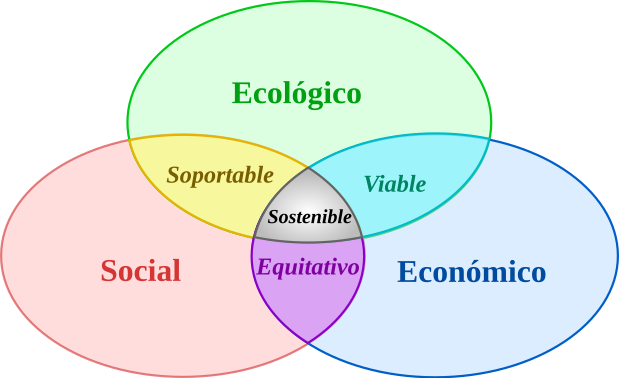
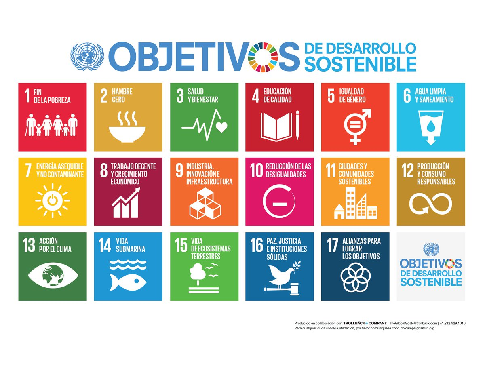
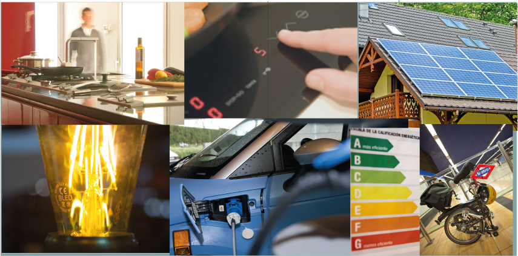
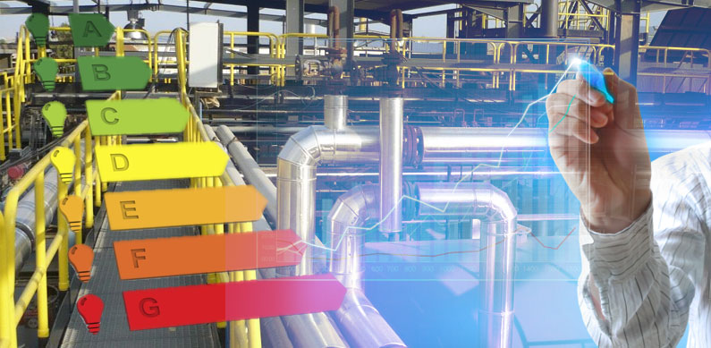

Objetivos de Desarrollo Sostenible (ODS)
¿Puede mantener nuestro desarrollo tecnológico el actual nivel de consumo de recursos naturales sin llegar a "quemar la nave Tierra"?
| El desarrollo sostenible, también llamado desarrollo sustentable, es un principio organizador para alcanzar los objetivos de desarrollo humano mientras se preserva la capacidad de los sistemas naturales para proporcionar recursos y servicios ecosistémicos esenciales para la sociedad y la economía, tomando en cuenta la preservación de sitios históricos y culturales. Su objetivo principal es satisfacer las necesidades actuales sin comprometer la capacidad de las generaciones futuras para satisfacer las suyas. |
 Esquema de los tres pilares del desarrollo sostenible, por Johann Dréo (User:Nojhan) / Translator: User:HUB1, CC BY-SA 2.0 FR, via Wikimedia Commons |

Desde finales del siglo pasado, muchos países se han reunido para encontrar vías hacia un futuro sostenible. Entre las reuniones y acuerdos destacan los siguientes:
- Protocolo de Kioto (1997), en el que
- Convención de Estocolmo (2001), sobre
- Cumbres de Río (1992 y 2012) y Johannesburgo (2002), sobre
- Agenda 2030 para el Desarrollo Sostenible (2015), de la Asamblea General de las Naciones Unidas (ONU), con la que se aprueban 17 objetivos mundiales de desarrollo sostenible (ODS), para conseguir tres objetivos globales:
- Erradicar la pobreza
- Acción climática
- Ciudades sostenibles

Entre los objetivos anteriores destacan, por su importancia, los número 6, 7, 12, 13 y 14, siendo, en general, sus tres pilares fundamentales los siguientes:
- Sostenibilidad económica: crecimiento eficiente.
- Sostenibilidad social: equidad, inclusión y bienestar de las personas.
- Sostenibilidad medioambiental: protección de ecosistemas y recursos naturales.
Técnicas y criterios de ahorro energético
Hay quien opina que la mejor fuente de energía es evitar el derroche que a veces se hace de la misma, algo que parece fundamental para conseguir el pretendido Desarrollo Sostenible. El objetivo es evitar el derroche innecesario de energía, tanto en el ámbito doméstico como industrial.
Ahorro doméstico
Reducir el ahorro energético en el hogar es posible mediante pequeños cambios de hábitos y mejoras en la eficiencia de los aparatos. El Instituto para la Diversificación y el Ahorro de Energía (IDAE) ofrece recomendaciones clave para disminuir el consumo en cada uno de los siguientes aspectos:

Climatización y temperatura
- Calefacción: Mantén una temperatura óptima de 21 °C en invierno. Bajar o subir cada grado adicional supone una variación de casi el 7 % en el consumo de energía.
- Refrigeración: Configura el aire acondicionado a partir de 26 °C en verano y usa ventiladores de techo o de pie, los cuales simulan una sensación de 3 a 5 grados menos con un gasto eléctrico mucho menor.
- Aislamiento: Instalar doble cristal o sellar bien puertas y ventanas puede reducir las pérdidas de calor o frío entre un 25 y 30 %.
Iluminación y electrodomésticos
- Iluminación LED: Sustituye las bombillas tradicionales por tecnología LED; consumen hasta un 80 % menos de energía y duran hasta 15 veces más.
- Frigorífico: Es el electrodoméstico que más consume. Ajusta la temperatura a 5 °C en el compartimento principal y a −18 °C en el congelador, y evita abrir la puerta de forma innecesaria.
- Lavadora y lavavajillas: Utilízalos siempre con carga completa y con programas de agua fría o eco.
- Consumo fantasma: Desconecta los aparatos que no estés utilizando o usa regletas con interruptor, ya que el modo stand-by sigue gastando electricidad.
Agua caliente
- Duchas frente a baños: Ducharte consume hasta 4 veces menos agua y energía que llenar una bañera.
- Temperatura: Ajusta el termo o caldera entre los 30 °C y 35 °C para cubrir las necesidades diarias sin sobrepasar el gasto.
Ahorro en la industria
Las medidas de ahorro y eficiencia energética en la industria permiten reducir los costes de producción, disminuir las emisiones de gases de efecto invernadero y optimizar el uso de los recursos.

Principales medidas de ahorro energético:
- Auditorías energéticas: Diagnóstico inicial obligatorio o recomendado para identificar pérdidas, cuantificar consumos y priorizar inversiones mediante empresas especializadas.
- Optimización de motores y variadores de velocidad: Instalación de variadores de frecuencia en bombas y ventiladores para adaptar la velocidad del motor a la demanda real (lo que puede reducir el consumo del motor hasta un 50%).
- Recuperación de calor residual: Captura del calor disipado en hornos, calderas o secadores para reutilizarlo en otros procesos térmicos de la propia fábrica.
- Sustitución por iluminación LED: Cambio de sistemas antiguos por tecnología LED con sensores de presencia y regulación lumínica, logrando reducciones de consumo de hasta el 80%–90%.
- Mejora del aislamiento térmico: Aislamiento de fachadas, cubiertas, tuberías de vapor y puntos de fuga de calor o frío para evitar pérdidas en climatización y procesos.
- Actualización de maquinaria obsoleta: Sustitución de equipos antiguos por nueva maquinaria con mayores estándares de eficiencia energética.
- Ajuste de la potencia y tarifas contratadas: Revisión de la potencia eléctrica contratada con la comercializadora para evitar sobrecostes por picos innecesarios o tramos no aprovechados.
- Autoconsumo y energías renovables: Integración de fuentes como paneles solares fotovoltaicos o aerotermia para cubrir parte de la demanda eléctrica industrial.
- Sistemas de Gestión Energética (SGE): Implementación de estándares como la norma ISO 50001 para monitorizar y mejorar el desempeño energético de forma continua.
- Formación y concienciación del personal: Capacitación de los operarios en buenas prácticas de apagado, control de equipos en modo stand-by y uso racional de la energía.
Puedes consultar guías técnicas y ayudas para la descarbonización a través de entidades como el IDAE (Instituto para la Diversificación y Ahorro de la Energía) en España.